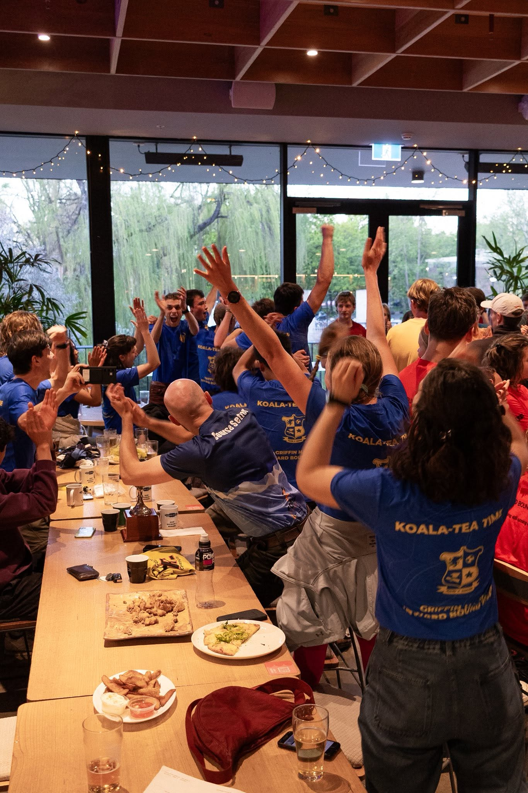
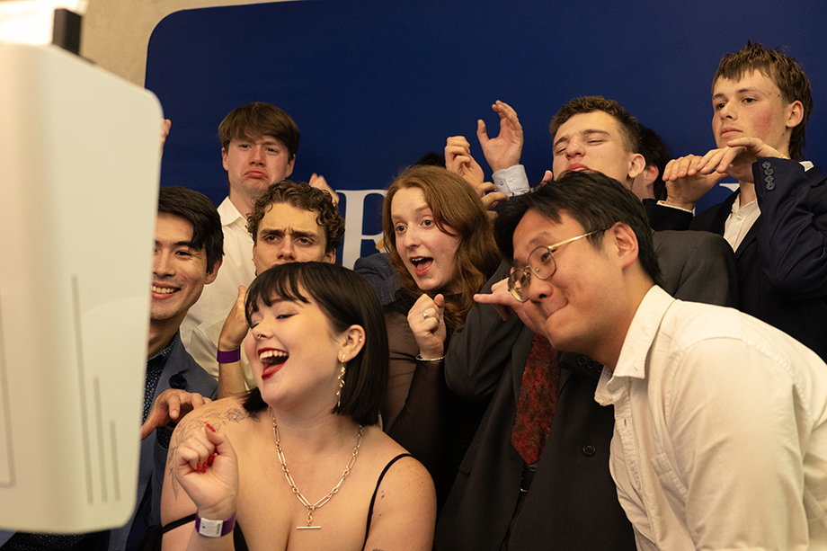

Exactly what is Inward Bound?
The sport, Griffin Hall, and Griffin Hall's coaches for 2026.
What is Inward Bound?
Inward Bound is an annual navigation-based endurance race run by ANU students in the country around Canberra. It first ran in 1962, when the university had only just started accepting undergraduate students and Bruce Hall was the only undergraduate residence on campus. The idea was borrowed from World War II survival training designed for downed pilots in enemy territory.
The format of the event has evolved over the decades, but the core skills and ideas have never changed. Teams of four are blindfolded and to a remote drop point after dark. From there it's just a map, a compass, emergency supplies/tools and your legs that can get you to endpoint. Specifically, GPS, phones, and interaction with the general public is banned, so there is no gaming the system. The first team to the secret Endpoint wins its division and gets the most points, with the remaining teams getting a smaller amount of points relative to their time gap with the winning team.
Safety comes first
Modern Inward Bound runs to serious safety standards. Teams carry mandatory gear — food/water, first-aid supplies, warm layers, and emergency communication devices that reach Race HQ if anything goes wrong. The event, officially sanctioned and supported by the ANU, is built around a comprehensive risk-management plan, and that professionalism is a big part of why it's still running six decades on.

Night start / map + compassSeven divisions, plus Division X
A "division" is a measure of difficulty. The higher the division, the further from the Endpoint you're dropped and the harder it is to get to Endpoint. Ensuring that each team has the fitness to finish within the cutoff time and without injury is critical, and the training events we run support this goal.
| Division | Rough drop distance | |
|---|---|---|
| Division 1 | ~100 km · up to 24 hrs | |
| Division 2 + Division X | ~90 km | |
| Division 3 | ~80 km | |
| Division 4 | ~70 km | |
| Division 5 + Division X | ~60 km | |
| Division 6 | ~50 km | |
| Division 7 | ~45 km |
Distances vary greatly year to year, as does elevation gain.

Griffin community / common roomWho are Griffin Hall?
Griffin Hall is ANU's non-residential hall — the first of its kind in Australia, founded in 2010. Effectively a well organised club/society, Griffin Hall builds community on campus through the events and an exclusive common room. A kitchen, study rooms, a nap room, and space to hang out appeals to those students who don't have somewhere to go between classes, and want to meet new people. Griffin Hall runs internal and inter-hall social and competitive events, with focuses on arts and sports competitions, such as a Battle of the Bands, Basketball, Dance Night, and of course Inward Bound.
Any ANU student not already in a residential hall or college can be a Griffin - you could join us today.
Meet the coaches
Here are the masterminds of Griffin Hall Inward Bound. The coaches are responsible for organising all the training events which is a massive task. Weekly training runs, navigational/map practice events, nav and mock drops (mini practice Inward Bound events, exclusive to Griffin Hall members), catering for all of these events, and communication with runners.

Some people call her "rats"... some people call her "Sophie"... all I know is I call her "Head Coach"

A freak in the (google) sheets, a paperwork king, and the socialite of the team, Josh is locked in and ready to win

Known by many names, he's got maps of the ACT downloaded to his brain and he's ready to use them

She brings dance moves to the course like no other, and never gets tired... I'm thinking about Lamingtons now

A run to the sun is just an average afternoon for her

Yep, another tall coach
How the squad trains
Months of running before race night, plus navigational skills and endurance. Our programme is tailored to the mix of runners Griffin brings each year.
Group runs
Relaxed pace runs that focus on socialising and endurance at realistic race paces
Dry drops, Nav/Scout Workshops and Nav Drops
We run dry drops, where we use pre-drawn scout maps to find our location within the comfort of Griffin Hall; Nav/Scout Workshops, where we go out to Black Mountain in the dark and practice drawing maps of the surrounding area; and Nav Drops, where we blindfold runners, drive them to the bush and just like the begining of Inward Bound, they practice finding where they are.
Mock Drops
Practicing for Inward Bound by running a mini version of the event in the region around Canberra.
Socialising
The Inward Bound community is bigger than just the runners; volunteers and ex-residents can get involved and hang out at our social events that put aside the running aspect and build community, not just a squad.
The full Inward Bound story
Six decades of Inward Bound, and Griffin's own chapter in it.